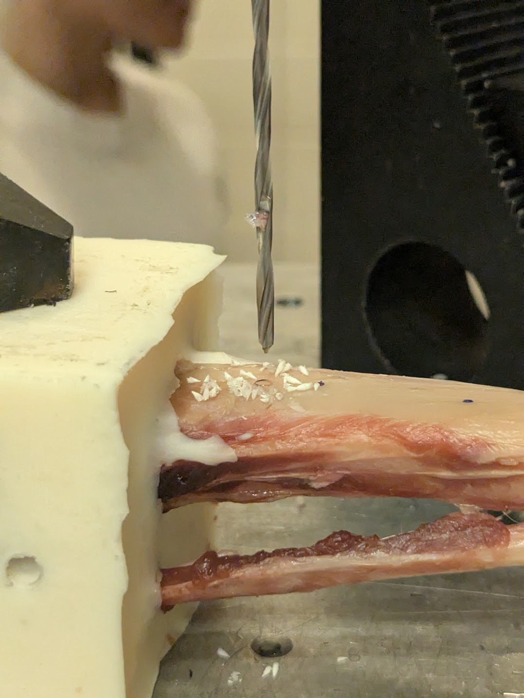

Orthopedic Instrumentation | Verification & Validation
TPLO Surgical Drill Bit Development
Designed and validated a stainless steel orthopedic drill bit through torque, force, wear, and coating degradation testing to establish surgical performance boundaries and support medical device verification.
View Full Case Study